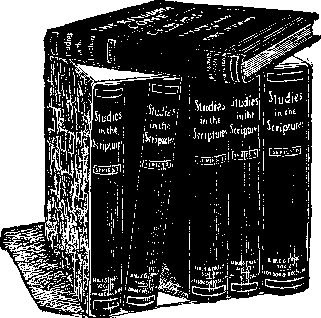

VOL. V.
NEW YORK CITY No. 6.
PASTOR WOULD BAR RED FLAG.
"Every foreigner who comes to these shores should be forced to take down his red flag forever and tear it to shreds before he is allowed to enter the country,’’ said Rev. Cortland Myers to the members of the Baptist Social Union last night. Dr. Myers’s talk was on “The Business Men and the Kingdom,” and he said that the ministry was greatly handicapped by the business men. He said that no drummer, however efficient, could sell goods without samples, and that unless the business man made of himself a good sample of the minister’s work, said minister could interest no one.
He decried the fact that ministers were displaying a tendency to drift off toward socialism, which, he said, was nothing more than anarchy and nihilism, as evidenced by the trouble at Lawrence and especially by the flags displayed there.
Another substantial aid that might be rendered the church by the business men, according to Dr. Myers, is the donation of moneys, for, said he, “the work of the kingdom needs millions.” Finally, in great heat, he stamped his foot and shouted to the men, “Do something!”—Boston Journal.
WITHIN ONE LIFETIME.
The following from the facile pen of the editor of the Mount Vernon Herald is as interesting an account of the progress within the memory of those still living as we have seen for many a day:
“A few days ago a man 94 years old died and was buried in Sedro-Woolley. Many who will read this were acquainted with him. His name was Joseph Cheney. Within the lifetime of this man many of the mightiest achievements of civilization have been accomplished. At the time of his birth there was not a railroad in all these United States; he was older than the oldest kerosene lamp; he was a young man when the first friction match was made; had written many letters before any one had ever seen a steel pen, and had voted before a letter was ever enclosed in an envelope; had hunted big game before a percussion cap was made; was thirty years old when the first sewing machine wTas made and placed on exhibit—all these things, which, to even the middle-aged, seem always to have been with us, to say nothing of the telegraph, telephone, electric light, aeroplanes and wireless telegraphy.”—Burlington (Wash.) Journal.
WESLEY’S HYMNS FOR CHILDREN.
How our concepts of God’s Love gradually have improved, the following from the London Chronicle well illustrates. It says:—
“If you could come across at a secondhand book store a copy of ‘Hymns for Children,’ by Rev. Charles Wesley (a little volume reprinted and issued with the author’s preface, by the Wesleyan Conference Office, as late as 1842) you would find some jolly Hymns in it. Thus:—
“ While they enjoy His Heavenly love, Must I in torments dwell,
And howl while they sing Hymns above, And blow the flames of hell?’
“Here is another:—
“ ‘There they lie! alas, how long! Never can they hope release— Not a drop to cool their tongue. Not an hour, a moment’s peace; Damn’d they are and still shall be, Damn’d for all eternity.’
“And yet the same man, in saner moments, wrote, ‘Gentle Jesus, meek and mild.’ ”
'ifeQsfeL
This article was published in Vol. v 5, No. 3.. of THE BIBLE STUDENTS J MONTHLY. The great demand for V copies of it has been remarkable. A sample copy will be mailed to any one free upon receipt of post-card re-Ji quest. Address publishers, 82 Beek-71 man St., New York.
MISCONCEPTIONS OF THE DARK AGES
“There shall he weeping and gnashing of teeth, when ye shall see Abraham and Isaac and Jacob and all the Prophets in the Kingdom of God, and you yourselves thrust out.”—Luke 13 :28.
BIBLE students in the past, resting under a terrible fear of an eternity of torture after death, were inclined to twist the statements of Scripture into supports for their misconceptions. We are now breaking loose from some of those horrible nightmares of the Dark Ages, finding that the Bible, rightly interpreted, does not substantiate them. The hobgoblins and demons of torture, cloven hoof, forked tail, malignant glance, pitchforks and tongues of flame came down to us, not from the inspired Word of God, but from the pens of misanthropic poets and the brushes of ambitious painters who reveled in the portrayal of blood-curdling scenes and endeavored to make them more awful than the tortures of the Inquisition chambers of their own day.
So far from describing Satan and his demon hosts as torturers of the dead, the Bible tells us plainly that the dead are “asleep” and will know nothing of joy or sorrow until the awakening time in the dawning of the Messianic Kingdom, and that Satan and his demon hosts of fallen angels are not far off, stoking fires, but near by us, “powers of the air.” It tells us also that these seek to oppose the Divine Program and to ensnare our race by personating the. dead, using as their channels deceived spirit mediums, as they used witches, wizards and necromancers in the past.
Satanic Influence Near.
St. Peter, so far from believing that Satan is far off, stoking fires, described him as a roaring, angry lion, going about amongst men, seeking whom he might devour—deceive, involve in sin. St. Paul forewarns us that Satan and his agents are crafty and are to be expected to present themselves as angels of light—leaders in advanced truth. We are assured that this dreadful, injurious agency has been deceiving the whole world for centuries. The Divine promise is that Messiah’s Kingdom shall bind or restrain Satan for a thousand years, that he may deceive the people no more until Messiah shall deliver up the Kingdom to the Father.—1 Corinthians 15:24.
The Scriptures specially forewarn us of great activity on the part of the evil spirits in the end of this Age, and intimate that they will have much to do with the great Time of (world-wide) Trouble which will precede the inauguration of Messiah’s Kingdom. It is time for us to be on the lookout for those wonderful manifestations of diabolism which for a time will seem to make many of our poor race madly insane, brutal, inhuman, diabolical. This is the real danger from the demons—in the present life, and not in the future.
They will deceive and torture humanity to the limit of their permission, when they will be restrained by the King of Glory and the bright shining of the Sun of Righteousness, which will usher in the New Day of earth’s blessing and restitution.—Malachi 4:2; Acts 3:19-21.
The words “weeping and gnashing of teeth” represent, not new conditions amongst men, but those which may be witnessed every day—sorrow, heartache, grievous disappointment; and this is the use of this expression in the Bible. We should dismiss all thought that the experiences mentioned will be after death and the result of tortures inflicted by demons.
Jews’ Bitter Disappointment.
In our text the Lord graphically pictures the disappointment of the Jews when they shall find out how great was their mistake in the rejection of Jesus and His Message. They will find that the glorious opportunity offered to them of becoming members in the Bride of Christ was the highest favor that Divine mercy could offer them as the children of Abraham. They will become aware of their loss of the heavenly portion and also of the earthly portion of the Divine promise. They will then come to understand that the promise to Abraham dealt with two seeds, one heavenly, the other earthly, and that the faithful ones of past Ages, Abraham, Isaac and Jacob and all the holy Prophets and other faithful ones of their nation, will be rewarded with the highest positions of honor in the earthly phase of Messiah’s Kingdom, while they who had the opportunity of entering the still higher, the spiritual phase of that Kingdom, failed because of unreadiness of heart to receive the Redeemer. They will find that some whom they esteemed as publicans and sinners and Gentiles, by accepting Christ and becoming His disciples, became chief heirs of the promise made to Abraham —became Abraham’s spiritual Seed—members of The Messiah, of which Jesus is the Head and the Church His Body.
Alas, poor Jews! Our hearts may well go out to them in sympathy in their chagrin and disappointment when they shall learn the truth on the subject, when they shall learn that they have lost not only the heavenly glory but also the honorable place of being Messiah’s earthly representatives. Most assuredly there will be weeping and gnashing of teeth, and contrition of heart and penitence, we trust, toward God, which will bring them into the right condition to be amongst the first of humanity to be blessed under the New Order of things. Very soon, we believe, the blindness is to be turned from Israel—just as soon as the elect, spiritual Seed of Abraham shall be completed, St. Paul tells us.— Romans 11:25-33.
Then favor will return to the natural seed of Abraham: “They shall obtain mercy through your mercy.” Their eyes of understanding will open; mentally “they will look upon Him whom they have pierced.” They will mourn for Him, and the Divine promise is that God will then pour upon them the spirit of prayer and supplication.
Other Similar Texts.
All Bible students will recall several other passages of very similar language to that of our text. But when we get the right focus upon them we perceive that they all belong to experiences in the present life, that none of them relate to incidents beyond the tomb. A greater care in the study of the Bible might have protected us from the thought that any of these references apply to the dead, because the Scriptures not only tell that they are sleeping and waiting for the morning, but they also particularly inform us that “the dead know not anything;” “their sons come to honor and they know it not, to dishonor and they perceive it not of them;” and that “there is neither work, nor device, nor knowledge, nor wisdom in the grave [Sheolj” —whither all go.—Ecclesiastes 9:5, 10; Job 14:21.
This expression, “weeping and gnashing of teeth,” is found also in the parable of the Wise and Foolish Virgins. The context tells us that this parable applies in the end of this Gospel Age, at about the time for the Second Coming of Jesus ■—not as a sin-bearing Sacrificer, but as the King of Glory. His consecrated, saintly people are likened unto ten virgins—five wise and five foolish.
The parable does not relate to the world at all, but merely to the saints. They are all virgins, all pure, all justified, all sanctified ones. The difference between them is in respect to their wisdom or unwisdom. The wise saints of God in the end of this Age, guided by the Divine Word, will walk very circumspectly, very faithfully, searching the Scriptures in respect to all they believe, and striving to conform themselves to the Divine will in all that they do and say.
Because of their watchfulness, alertness, devoutness and loyalty they are wise and will be in a special position of advantage and knowledge in respect to the things of the Harvest time of this Age. The Master, the Bridegroom, will lead these; and gradually, one by one, they shall go through the door of death in to the marriage, experiencing the glorious change promised, “in a moment, in the twinkling of an eye. They will complete the Bride Class, 7c which none can be added, because it is a foreordained and. predestinated number. With the end of our Age the door to glory and immortality will close, never to open again, because there is to be but one Bride and her membership is limited by foreordination.—Revelation 21:9, 10; 14:1.
The Foolish Virgins.
The “foolish virgins” will miss their glorious opportunity by reason of unwisdom. They will be so overcharged with the cares of this life and the deceitfulness of riches and the at+empt to have the favor of the world a., well as the favor of the Lord that it will hinder them from proper Bible study and from faithfulness in walking in the footsteps of Jesus. Because of this they are styled foolish, unworthy of God’s highest favor —the Divine nature.
The parable shows them as finally, in the very close of the Age, obtaining the light which they should have had sooner had they not been overcharged with earthly cares and ambitions. As soon aa they obtain the light they realize the situation and ask for admission as members of the Bride of Christ, to which they were called; but the answer is that it is complete, that the Bridegroom can know only one Wife and cannot recognize them thus. Then to them will come weeping and gnashing of teeth, sorrow, disappointment, chagrin, that they have failed to obtain through their own carelessness this highest Prize, to which Divine Mercy and Love had invited them.
At that time will be great tribulation in the world, such as never was since there was a nation, and these “foolish virgins” will have their portion in it— with the hypocrites. The “time of trouble” will be specially upon the hypocritical or “tare” class of Christendom, which has pretended loyalty to God as His Church when in reality their hearts were far from Him. The “foolish virgins” are not hypocrites, but true saints; nevertheless, on account of not living fully up to their privileges, they will fail to gain the Prize and be given a portion in the great trouble time with the hypocrites.
This is the Master’s own description of the matter. A little later on (Revelation 7) He tells us more on the subject, that only Bible students may fully appreciate and understand. He tells us that after the completion of the Church, Spiritual Israel, the 144,000, a great multitude will “come up through great tribulation and wash their robes and make them white in the blood of the Lamb.” These will be honored with a place before the Throne, while the Elect, as the Bride, will be honored with Immanuel in His Throne.
This multitude will be granted palm, branches, representing a final victory, but they will never be granted the crowns-of victory, which will belong only to the Elect, “wise virgin” class, the Bride upon the Throne. The Bride class will be the Temple, composed of living stones; but the Great Company, the “foolish virgin” class, will not be stones of that Tempi-'. but will serve God in the Temple. An nonorable place will thus be granted the “foolish virgins,” who finally get the oil and finally cleanse their robes in the time of trouble, but never will they attain the portion of the Bride.
In Psalm 45 we have a description of the Church in glory, the Wise Virgin class. She is pictured as a Bride, all glorious within and clothed in raiment of gold and fine needlework. The Heavenly Bridegroom will present her faultless before His Father, the Great King; and then we read, “The Virgins, her companions, shall follow her; they shall be brought into the presence of the King.” How glad we are that in Divine providence their weeping and gnashing of teeth and sorrow and disappointment at losing a place in, the Bride Class will eventually work out for them a contrition of heart, and a. demonstration of loyalty which God can (Continued on 2d page, 2d column.'
PIBLISHF.D AT
82 BEEKMAN ST., NEW YOKE CITY C. W. Hek, Editor.
Monthly—12 cts. a Year. Single Copy, 1c.
An Independent, Unsectarian Religious Newspaper, Specially Devoted to the Forwarding of the Laymen’s Home Missionary Movement for the Glory of God and Good of Humanity.
YOU FIND WHAT YOU LOOK FOR.
“He that hath a froward heart findeth no good.” Whoever would be happy must make up his mind to see only the good in others, to hunt for the beautiful things in their characters and to ignore the ugly things; to look for harmony and to avoid discord.
To hold the loving thought, as a mother does toward her children, develops the better side. The delicate flower of manhood or womanhood will not blossom in the foggy, chilly atmosphere of hatred, of jealous envy and condemnation. It must have the warm sun of love, of praise, of appreciation, of encouragement, to call out its beauty and to produce the perfect flower.
Never allow yourself to condemn or form a habit of criticizing others. No matter what they do, hold toward them perpetually the kindly thought, the love thought. Determine to see only that which is good and sweet and wholesome and lovely in them. Try to see the man or woman that God intended, not the warped, twisted and deformed one which a vicious life may have made; and you will generally find what you are looking for.
You will never find the straight by ■looking for tne crooked, or holding the crooked thought in mind. If you are constantly criticizing or finding fault, instead of praising or appreciating, you will ruin your power of seeing the beautiful and the true, just as a habitual liar •loses the power to tell the truth.
If you habitually hold the deformed thought, the ironical, the skeptical, the ■pessimistic, the depreciative thought, you will ruin your ability to see or appreciate merit, or what is good and true.
PROFITING BY PAST ERRORS.
Whilst Catholics are returning to the Bible, and the present Pope has directed that their people be encouraged in Bible study, Protestants are drifting rapidly into Infidelity under the modern designations of Higher Criticism and Evolution. Our fathers, during the Dark Ages, got away from the Bible by supposing an “apostolic succession.” Gradually the Creeds usurped the Bible’s place under the supposition that they agreed. Now, having outgrown those Creeds, in rejecting them many are rejecting the Bible also. This is a mistake! The Bible is the most wonderful book in the world when allowed to interpret itself. It furnishes the only rallying ground for human brotherhood and Christian brotherhood. The world otherwise is facing anarchy. A lost religion will soon mean a lost God, and a lost future hope, and a ■ selfish strife for the present life only. The hell-torture theory is nauseating people. They are rejecting the Bible because they erroneously think that it teaches it.
Let us not mourn our errors of the past •unduly, but at once, now, get right with God and His Book! Its presentation is logical from Genesis to Revelation. It tells of the perfection of our first parents, of the test of. their loyalty, of their failure, and its penalty, death—not eternal torture. (Gen. 2:17; Rom. 5:12.) It tells that all of present imperfections, mental, moral and physical, are incidental to the • death penalty. 20,000,000,000 have been •born dying and soon toppled over into the ’tomb. They are not being tortured in hell or purgatory, but, according to the Bible, are unconscious until their resurrection. __________________
GRATITUDE.
“All glory to Jesus be given,
That life and salvation are free, And all may be washed and forgiven;
Yes, Jesus has saved even me.
“From the darkness of sin and despair,
Out into the light of His love,
He has brought me and made me an heir
To kingdoms and mansions above.”
J THE RICH M AN AND] EAZARI S p
VJ All Christians have wondered re-J specting this parable. When taken i H literally it seems unreasonable. Why &■ J should a man suffer torture merely L Vj because he was rich, well clothed, and bountifully fed? And why should L xj another man be carried to glory J simply because he was sick and poor L M and a companion of dogs? In the xj clear light now shining, this parable L m is luminous and beautiful to such Kf jj an extent that one is compelled to L x| laugh at his own foolish misunder- fx standing of it in the past. L-
The full explanation of this par-xj able is given in another number, o/ which we shall be glad to send you, fiee of charge, upon postal-card lx request. Address, Bible & Tract
J,1 Society, 17 Hicks St., Brooklyn, bL New York. [x
(Continued from 1st page, 4th column.') reward with a blessing upon the Heavenly plane!
Wailing in Outer Darkness.
Another text dealing with “wailing and gnashing of teeth” deserves consideration here. It occurs in connection with the parable of the Wedding Garment. That parable pictures the closing time of this Age, when under Divine blessing God’s most saintly people will be given greater light on His Word and be enabled thereby to more fully appreciate th^ lengths, breadths, heights and depths of His Love and its w’onderful providences.
These consecrated ones are represented as being gathered into a great banquet hall, radiantly beautiful. In it they tarry, waiting to be ushered into the banquet proper, in an adjoining apartment. The light of these apartments is, in the parable, vividly contrasted with the darkness that prevails outside, which darkness represents the condition of the world and all of God’s people who have not yet come into the light of “present truth.”
The parable is given specially to show the necessity of the “wedding garment” —that none may enter into the marriage feast except he acknowledges and uses the “wedding garment.” On such festival occasions in ancient times it was customary that all guests should be furnished by the host with garments of white which would cover their own garments, and for the time being, as his guests, this placed them all on the same footing, whatever their ordinary station in life. Thus we have pictured the justification which all God’s people receive as a gift through the merit of their Redeemer. Being justified by faith the consecrated have not only peace with God, but they have access to this figurative “marriage supper.”—Matthew 22:11-14.
The parable is laid in the end of this Age and points out that at this time an inspection of the Church may be expected. “When the king came in he beheld a man who had not on a wedding garment.” The implication is that the man had put on the wedding garment, else he could not have gone in at all;
ONE REDEEMER FOR WORLD’S SIN
“He is the propitiation for our sins (the Church’s sins), and not for ours only, but also for the sins of the whole world.”—1 John 2 :2.
AS the Jews applied all of God’s promises to themselves and left none for the Gentiles, until the end of the Jewish Age, so we Christians have been inclined to appropriate to ourselves all of the gracious promises of the Bible, leaving nothing for the Jews and the world in general —until now, in the ending time of this Age and the dawning of the Millennium, we are coming to see God’s Word in a clearer and more beautiful and harmonious light. Now we see special promises for the Jews in the past, special promises for the Gospel Church, promises for the Jews in the near future, and still other promises and blessings for every intelligent creature. And the more the light increases on the pathway the more reasonable the Divine Plan appears to us. Why should God select one nation or people of one religious cult for glory and make preparations from the very beginning of creation for the eternal torture of all others? Surely we have been most inconsistent in our interpretations of the Divine Message, yet just as surely the all-wise One knew of our plight and permitted us to remain in darkness until now; and He is able to overrule our measure of blindness so that it will be of no injury to us.
Perhaps, indeed, the beauty of the Divine Word and Plan is much more perspicuous now because of the darkness in which we all were so recently involved, and perhaps the same principle later on will apply to the whole world. When all shall emerge out of the darkness and ignorance and superstition into the glorious sunlight of Divine Truth and grace, undoubtedly the contrast will make the blessings of the future all the more precious, and the. more incline every knee to bow.
After Divine favor had first granted opportunity to the Jews to accept the Redeemer, shedding upon them first the special light of the Gospel, then the Message was sent forth without restriction, gradually through Asia Minor, into Greece and into Rome, and then it favored chiefly the Germanic nations—and amongst these we include the British people and the larger proportion of our American population. In these peoples, too, the Reformation Movement found its chief adherents. The Message of Christ has made great in civilization all the nations it has touched, in proportion as they have received the Message in simplicity and purity, and in proportion as they have lived out their Christian profession as footstep followers of Jesus.
Less Favored, Not Less Worthy.
So far as human judgment can discern, the Divine records show that these favored peoples were not superior to others less favored. The Bible shows us some noble characters amongst the Gentile nations before the Redeemer’s day, and plainly intimates that God intentionally bestowed His favor upon a stiff-necked race, less tractable than others at that time. We see the same thing in respect and his appearing later on without a “wedding garment” implies that he had rejected the robe provided by his host.
Thus he represented a class of Christians in this our day who, after believing in the merit of Christ’s sacrifice, and accepting it as the passport to favors and privileges, ultimately reject it and count it common or unimportant. The parable shows what is to be expected now, namely, that the Great King will command that such as ignore the merit of His sacrifice be cast into outer darkness.
Outer Darkness General.
But let us note carefully that the “outer darkness” is not something beyond death, but that it prevails everywhere, all around us. “Darkness covers the earth and gross darkness the heathen.” The only ones who are in the light are the ones whom the Lord has specially received and specially enlightened and specially privileged because they wear the “wedding garment” of Christ’s righteousness. The casting out of the one without the “weddir j garment” into “outer darkness” therefore would mean merely that such a one, despite his struggles and desire to remain in the Light, would by Divine providence be forced into the darkness common to the whole world and lose those special privileges which he had enjoyed as one of the children of the Light and heirs of glory.
About the time that the faithful will be ushered into the marriage the great “time of trouble” will break upon the world, and all who are in darkness will have “weeping and gnashing of teeth” as they behold the collapse of those things upon which they have set their hearts and affections—the things of the present Order. Thank God, their weeping and gnashing of teeth may ultimately be turned into joy, because there is a silver lining to the dark cloud which is about to envelop the world! It will be the dark hour preceding the dawning of the New Dispensation and the blessing of all the families of the earth by Messiah and His Bride, to a place in which, by the grace of God, dear hearers, let us strive to make our calling and election sure.
to the operation of God’s grace during this Gospel Age. Apparently the peoples of India and China were more docile and of much more likely soil for the Gospel Message than the fierce Goths and Huns and Franks to whom the Gospel was more particularly directed. How unlikely it would be that the less-favored nations snould have no provision in the Divine Plan!
On the contrary, we perceive that a special election, or selection, of a saintly class was made during the Jewish Age— Abraham, Isaac and Jacob and all the Prophets and saintly Jews. (Hebrews 11:13, 38-40.) And since the selection of the saintly Jews, the calling of the Bride class, chiefly from the nations of Europe, implies that when this spirit-begotten, Spiritual Israel, spiritual children of Abraham, shall be completed, then all nations will be alike favored in the distribution of the coming blessings declared to be for all other peoples, kindreds and tongues.
No Predestination to Misery.
While in Geneva our mind naturally went back to the days when that great and good man, John Calvin, cut such a swath in religious sentiment that it still influences about one-half of all Protestants. We saw the monument to Calvin, and we saw the monument unveiled by Calvin’s followers to the honor of Serve-tus, whom Calvin so horribly burned to death at the stake. Indeed, we are sure that the monument, as it declares, was not so much of a tribute to Servetus as a protest against Brother Calvin’s atrocity committed in the name of Jesus, the Bible, and the God of Love.
We must give John Calvin credit for emphasizing the doctrine of Election, although we cannot give him credit for making that doctrine, for of course it was a Bible doctrine fifteen centuries before his birth. Had he been contented with emphasizing the election for the Church and had he said, “I know not what will be the fate of the non-elect,” he would have deserved to this day our unstinted praise. But alas! to err is human. Calvin was not content to leave the matter thus. He reasoned out his theory, and, his head being imperfect, his conclusions were defective when he surmised that all of the non-elect, whether infants or gray-headed, were predestined to eternal torture. This feature, purely Calvinistic, and strictly unscriptural, has been the cause of untenable difficulties in the theology of Christendom from Calvin’s day until now.
The Key to the Problem.
The key which solves the problem is so simple that we wonder that we have all so long overlooked it. The key is found in the promise made to Abraham that his Seed was to be the Elect—Jesus the Head and the Church His members—Jesus the Bridegroom, typified by Isaac, and the Church His Bride, typified by Rebecca, Isaac’s wife. And this Seed of Abraham when completed, according to Divine promise, is to be the channel for blessing all the families of the earth—the living and the dead. The blessing that is to come to all is clearly stipulated by St. Paul, saying, “God our Savior will have all men to be saved (from the condemnation that came on them through Adam) and to come unto the knowledge of the Truth.”—1 Timothy 2:3-6.
The basis of the Apostle’s argument is set forth in Romans 5:12. Ele there shows that Adam, and not his race, was put on trial in Eden—that Adam and not his race was directly condemned—but that Adam’s race is involved through heredity, by inheriting the weaknesses and dying conditions of their parent. St. Paul then shows forth in the same argument that as condemnation and death thus passed from Adam to all of his race, so Christ Jesus, having become Adam’s Redeemer, Divine mercy through Him extends beyond Adam to all the members of his race who were involved with him in the death sentence by laws of heredity. The argument is plain. To see it is to be convinced, because it is so logical. And it could not be supposable for a moment that God would provide the Ransom-price for all mankind and fail to make it operative, because the great mass of mankind went down to death without a knowledge of it—many of them during the four thousand years before Christ came into the world to give His life a Ransom.
The explanation is that all went down into the Bible hell—down to the tomb, the death state, in harmony with the sentence, “Dying thou shalt die.” Provision is made for the redemption of all from Sheol. (Hosea 13:14.) Christ died for all, and, as a result, there is to be a resurrection of the dead, both the just and the unjust. (Acts 24:15.) The just are the justified, and are the comparatively few who have heard of God’s grace and have responded and come into fellowship with the Father, and being approved of Him are to share in the chief, or First Resurrection. The remainder of the world, equally redeemed by the precious blood from the power of the tomb, are all to come forth unto a resurrection of the dead, “For as all in Adam die, even so all in Christ shall be made alive, each in his own order.”—1 Corinthians 15:22, 23.
The Church’s Sin—the World’s Sin.
How clearly our text defines the fact that the Church is a separate and distinct class from the world—a class called out from the world. As Jesus said, “Ye are not of the world, even as I am not of the w^rld,” “for I have chosen you out of the world.” The ordination of the Church is to association with the Redeemer in. His great work of witnessing now for the Truth, showing faithfulness even unto death and sacrificing all the earthly interests, to the intent that they with the Redeemer may later on be associated in the work of blessing the world as the antitypical, the Spiritual, Seed of the Abrahamic promise. (Galatians 3:29.) All along we read in our Bibles that “Jesus Christ, by the grace of God, tasted death for every man.” (Hebrews 2:9.) But other texts misunderstood, beclouded our judgment and led us to think that this
PASTOR RUSSELL'S SCRIPTURE STUDIES.
These volumes deserve a careful study by all who are not thoroughly satisfied with the Bible interpretations of the “dark ages.” They can be bought for a trifle or borrowed free. Address publishers, as below.
Respecting the first volume of this work “Bill Arp,” the famous Southern Philosopher and Journalist, said:
“This wonderful book makes no assertions that are not well sustained by the Scriptures. It is built up stone by stone, and upon every stone is the text, and it becomes a pyramid of God’s love and mercy and wisdom. There is nothing in the Bible that the author denies or doubts, but there are many texts that he throws a flood of light upon that seems to uncover its meaning.”
The set of six volumes, cloth, 3,000 pages, is supplied by the BIBLE AND TRACT SOCIETY, NO. 17 HICKS ST., BROOKLYN, N. Y., for the usual price of one such volume, namely, $2. This includes postage or expressage to your home, anywhere. text meant every man in Christ. We all know that the Bible declares that “God so loved the world that He gave His only-begotten Son, that whosoever believeth on Him might not perish but have eternal life.” (John 3:16.) We found it difficult to limit this text to the Church when it specifically declares the world. We see now that it applies to the Church first and to the remainder of the world afterward.
Those ’.o in the present life, during this Gospel Age, hear of Christ and have their eyes of understanding opened to recognize Him as the Son of God and the Savior cf men—these shall be delivered from the Adamic death, and pass immediately by faith to a reckoned everlasting life, which will ba completely theirs when they shall have experienced the glorious “change” of the First .Resurrection. We are glad now to see that the Divine ’purpose still holds on with respect to the world that was lost and redeemed. We perceive now that God intends to bring all men to a knowledge of the Truth. More than this, He intends to give the world the assistance of the Royal Priesthood for a thousand years for their edification, instruction and uplifting out of sin, degradation, death, back into full perfection of the image of God in the flesh, freely provided for all who will come unto the Father through the precious arrangements then operative.
The penalty of the sin of Adam was inherited by all of his race and therefore was as mucn against the class chosen as the Church as against the remainder of the world. This the Apostle declares, •saying, “We (the Church) were children •of wrath, even as others.” (Ephesians 2:3.) We have merely been delivered from the curse, the death sentence, in advance •of the world as a result of special Divine favor enjoyed by us—whether that favor •consisted in not being so seriously fallen as some, or whether it consisted in special •opportunities for coming into this grace. And if the Church has enjoyed some special favor of God in being constituted the first-fruits of His creatures to be delivered from the power of sin and death, why should we ever have imagined that He had no grace whatever remaining for our less fortunate brethren (the world in general) ? And how could we think of the Church as the first fruits and suppose that there would be no after-fruits—no general harvest of the world?—James 1:18.
Our text forcefully calls attention to this •double action of Divine grace—first upon the Church and secondly upon the world— and points us to the fact that the salvation of the willing of the Church of this Age, and the salvation of the willing of the world in the next Age—two distinct salvations—both proceed or result from the one redemptive sacrifice of the Lord Jesus Christ finished at Calvary. Notice the statement, “He is the propitiation (satisfaction) for our sins (the Church’s sins), and not for ours only, but also for the sins of the whole world.”
Will Truth Injure?
Many ministers all over the world, following the suggestions of the I. B. S. A. Convention, have informed their congregations and the world in general through the newspapers that they do not believe in a hell of eternal torture, and that they do not believe that the Bible, rightly interpreted, teaches this. But there are others who, by some influence, take an opposite course. They denounce the Bible Students for telling the people the Truth. These ministers, generally without much influence even in their own congregations, have, we are told, threatened the newspapers all over the world that are publishing the sermons of Pastor Russell that they will boycott them and influence their congregations.
But the editors are finding out that narrow-minded people never have much influence, good or bad. Hence these sermons still appear in nearly fifteen hundred newspapers in the English language and are spreading into the German and Swedish. These brethren claim that the world is likely to be injured and to be turned away from God and the Bible by its proper interpretation. We answer, Not so. After the preaching of eternal torment for sixteen centuries the net result is that everybody is losing faith in the Bible, which has been misinterpreted, and many are even losing faith in a personal Creator. Is it not time, even for policy’s sake, to discontinue the misrepresentation of God and His Character to see if the Truth will not accomplish more than the error has done? And aside from the policy question, if we have been slandering our Creator and misrepresenting the Bible for centuries, is it not all the more incumbent upon us now to set the matter right?
'■ Who will deny the fact that life and property are less secure in so-called Christian lands, where eternal torment has been preached for centuries, than in any other part of the world? We assure the dear brethren who are fearful, that we have many evidences to prove the very contrary of their fears—to prove that a better knowledge of God and His Love, as expressed in the Divine Plan of the Ages, is helping many, not only out of ignorance and darkness, but also out of indifference and wickedness, into fellowship with God. But anyway, how dare we, as ■Christian ministers, either directly or indirectly, slander the character of our God in a way and to a degree that we would resent if charged against our worst enemy ?
We fear that some of these misguided brethren are more solicitous for their own supposed welfare and the supposed interests of their own churches than for the glory of God or the welfare of the people. They are afraid to have the people see the light of Present Truth and gain a clear comprehension of the Bible, possibly because they fear that this would reflect upon them as not having properly instructed the people. They seem to know that if the people will read they will be convinced—and if convinced, they will no longer be sectarian, nor pay good money to help to misrepresent God’s character and keep the people in ignorance of the
MAN’S FALL FROM DI VINE FAVOR
“What is mam?”—Psalm 8:4.
WE have chosen for our topic on this occasion what we believe is an important, yea, a vital question of deep interest to all humanity: “What is Man?” This great question the Bible alone answers distinctly and satisfactorily, as we hope we shall be able to demonstrate. The answer of Science to our query is at least in one respect right and in full accord with the Bible. Science tells us that man is an animal of the highest order—genus homo. The Bible agrees with this and declares man distinctly different from the lower animals, and also distinctly separate from angels and spirit beings. He is terrestrial, ‘‘of the earth, earthy”—he is not spiritual, not celestial or heavenly. The earth, not heaven, was made for his home.
The Bible does tell of man’s fall from Divine favor and of his Divine condemnation, but his fall was not from a heavenly condition to an earthly condition, but from an earthly condition of perfection to a dying condition of imperfection. The Bible teaches that if man had not sinned his life would have been everlasting, in earthly perfection, and that his home would have been an earthly Paradise in which he would have enjoyed the blessing •and fellowship of his Maker.
The death sentence did not alter or change his nature, but merely forfeited his life and all of his blessings and rights which were dependent upon his life. The penalty was not, “To eternal torment shalt thou go, to suffer eternally at the hands of demons,” but, “Dying, thou shalt die;” “Thorns and thistles shall the earth bring forth unto thee;” “In the sweat of thy face shalt thou eat bread until thou return unto the ground; for out of it wast thou taken; for dust thou art, and unto dust shalt thou return.” And of the faithful execution of this Divine penalty against the sinner we are all witnesses.—Genesis 2:17; 3:17, 18.
And Yet How Grand Is Man!
As we stood by the ruins of ancient Memphis, where Joseph rose from being a slave to being the Governor, next to King Pharaoh, we were impressed with some of the mighty monuments which persist despite the ravaging hand of time. We said to ourself, What is man? What a king of earth he is, and has been, notwithstanding his deterioration through sin and the fall! As we noted the sculptures of thirty-five hundred years ago we said, Truly the Bible is right when it declares that God made man in His own image—that to man, the highest earthly creature, the great Creator, Himself a Spirit, imparted an impress of His own character and a measure of His own power, so that man really was created a god of earth toward the lower creatures which were put under his care, as his Creator is the God of the Universe.
Our admiration for our race and its skill was greatly enhanced as we thus cogitated. The pyramids, and especially the Great Pyramid of Gizeh, near Cairo, impressed us similarly. When we considered the wonderful accomplishments of that long-ago period and reflected that we could scarcely do more today with our most improved machinery, our appreciation of our ancestors was enhanced, and we said, It would be very difficult for many to accept the modern scientific theory that our forefathers but a short time ago were cousins to the ape.
Some of the temples of India and China similarly impressed us. Athens, too, with its museums of ancient structure, similarly said to us, Truly man in his original perfection must have been created in the image of his Maker! Our visits to Rome impressed upon us the fact that although the work of death has progressed in our race, nevertheless, in a measure the decay of the masses has by Divine providence found compensation; for although we have no Michael Angelo today we have legions who are inspired by his example, and who have copied him with wonderful success, so that today our treasures of art are not only multitudinous but grand beyond those of any previous day.
The great St. Peter’s at Rome is itself a treasury of art such as never before was known in the world, besides which all the great capitals of Europe abound with art galleries which illustrate the power of the human mind and the skill of the human hand in the appreciation and execution of the beautiful. And in this con
true meaning of His Word. This accounts for the wild and fanatical and untruthful misrepresentations of our teachings! They give the people horrible misrepresentations of our teachings to hinder them from coming to a knowledge of the Truth. In three different cities, ministers in this enlightened Twentieth Century have, under one pretext or another, collected* our books and burned them after the style of the autodafe of centuries ago. In every case, where this vindictive spirit has been shown, good has resulted. Saner or more honest minds have been led to investigate —just as when, centuries ago, the Bishop of London bought up and burned publicly the Bibles which Tyndale had translated and published.
nection we must not forget the similar treasures of our home land, America.
Utilities of Our Day.
But, dear friends, you and I are living in a specially utilitarian Age. The skill of humanity has during the last century been turned into a new channel, which is making for us a new world. Instead of the narrow streets and lanes of a century ago, we have broad asphalt avenues and boulevards; instead of ordinary houses of a century ago, our cities are replete with handsome and commodious residences that in comparison are palaces. Beautiful, graceful bridges span our great rivers and serve to consolidate our interests. Wonderful tunnels pierce our mountains and facilitate the movement of luxurious railway coaches. Palatial steamers with regularity connect port with port.
Often of late we have found ourself admiring some of our grand hotels and palatial capitols and engineering feats of bridge work and tunnels, saying to ourself the while, What is man? And then we reflect, If man in his fallen condition has learned gradually to accomplish so much, what may we reasonably expect would have been the ultimate capacity of perfect man had sin not entered into the world, and had the experience of centuries been accumulating in many brains! By now how wonderful a being Father Adam might have been!
Times of Restitution.
Then our mind reverted to the great Creator and the Message He has given us in His wonderful Book, the Bible. iVe remembered the inspired Message of consolation, that God looked down in pity on us as a race in our fallen condition and that He planned even before our fall for our recovery as a race from ,the curse, from sin, from death. We hearkened to St. Peter’s words of encouragement respecting the glorious blessings to be ushered in by the great Redeemer when at His Second Advent He shall take unto Himself His great power and begin His Messianic reign for the blessing, recovery and uplift of our race. We will remind you of His words, although you are familiar with them. He said, “Times of refreshing shall come from the presence of the Lord, and He shall send Jesus Christ, who before was preached unto you, whom the heavens must retain until the Times of Restitution of all things which God hath spoken by the mouth of all His holy Prophets since the world began.”—Acts 3:19-21.
Ah, God is better than all our fears! During the Dark Ages a terrible nightmare became associated with the glorious Gospel of God’s Love and Mercy revealed by Jesus and the Apostles. Under that nightmare we lost sight of all the glorious promises of the Bible and lost our confidence in God because of the terrible propositions declared to us to be His intentions toward our race. True, all acknowledged th hope that a saintly few would attain an eternal weight of glory on the heavenly plane, but all the remainder except the saintly ones, the Elect, were consigned either to a terrible purgatorial fire or to an eternal holocaust of torture. What blasphemies against our God, the God of Grace, we thus unwittingly, unde-siringly entertained!
The effect of these teachings in all parts of the world, in every religion, has been to convert man’s natural quality of reverence for his Creator into a terrible fear, and this fear has more and more separated us from God and the Bible.
Mankind and the Church.
We are now coming to understand more fully the Bible doctrine of Election, and we see it to be not unjust and cruel as it once appeared, but beautiful and blessed, for both Elect and non-elect. The Divine Plan was, and still is, a universal Plan— a Plan granting universal opportunity to Adam and to all his race for a recovery from the penalty of sin—for a recovery from sin and death to all that Father Adam had in the beginning and which he lost through disobedience, and which Jesus redeemed for him and his race at Calvary, and which all the willing and obedient may have back again at the hands of the Redeemer, if they will, during the period of His Messianic reign.
This is the Restitution which St. Peter tells us God spoke “through the mouth of all the holy Prophets since the world began.” And the blessing will not b$ merely restitutionary, but indeed all tne experiences of the present time with sin and sorrow, pain and death will be blessed, helpful lessons for the future— guards against any repetition of the scenes of disobedience against the Divine regulations made for man’s comfort, happiness and everlasting joy.
The work accomplisned by our Rer deemer at Calvary was merely a prepara' tory one. His death provided the Ransomprice for Father Adam, and hence for all Adam’s race who share his condemnation. The work of Divine grace which has progressed since Jesus’ death and resurrection is also a preparatory work. During this period of more than eighteen centuries God has been gathering out of the world a special class, willing to pass through specially severe trials and testings of faith and obedience, under the inspiration of certain “exceeding great and precious promises” (2 Peter 1:4)— of a share with Jesus in the Divine nature and glory, honor and immortality.
This selecting work began with natural Israel, and has extended now gradually the world around, gathering from every nation samples and representatives, but all saintly; all in heart, at least, copies of God’s dear Son, the Redeemer. With the dawning of the Seventh Great Day— the Day of Christ—this work of electing or selecting a special class of saints to constitute His Bride and joint-heirs in the Kingdom will be complete. Then will begin the salvation of the world—the reclamation or Restitution of the world from sin and death conditions, made possible by the great redemptive work of Calvary.
“Glory In the Highest.”
From what we have seen of the Divine provision for man’s recovery we grasp the force of the prophetic declaration following the question of our text—“What is man, that Thou art mindful of him— the son of man, that Thou visitest him?” When we think of the greatness of our God, and the littleness of ourselves, even in our best estate, and especially when we think that we are all sinners, we are amazed that our great Creator was mindful of us—mindful of preparing a great Plan of Salvation—willing to provide for our redemption, and making preparation for the Kingdom which is to bless the race! Can we doubt that He who has so loved the world while they were yet sinners will bring His Plan to a glorious consummation? Can we doubt that He will do all that He has promised, exceeding abundantly more than we could have asked or thought?—Ephesians 3:20.
Do not understand us to say that the Bible teaches a universal salvation of our race to life eternal. No, that would be unreasonable. That would imply Divine coercion of the human will, and such a coercion would be contrary to the teachings of the Scriptures—that man is created in God’s image and likeness. An essential feature of the Divine likeness in man is the freedom of his will; his body may be coerced or enslaved or what not, but the human will is indomitable, like that of man’s Creator.
It is evidently not the Divine intention to destroy the human will, but to educate it—to allow it to develop as a will, along the lines of experience, so that it may be voluntarily submitted to the Divine will because of appreciation of the wisdom of all the Divine arrangements, regulations, laws, etc. The Divine proposition, therefore, is that as all mankind shared by heredity the sentence of death which came upon the first man Adam, so the redemption accomplished by the Second Adam shall be co-extensive with the fall, so that all Adam’s race who will do so may return to God and be abundantly pardoned and finally restored to all that was lost in Adam and redeemed at Calvary.—Matthew 18:11-13; Luke 19:10.
And what, you ask, will be the fate of those who wilfully, deliberately, persistently, intelligently resist the Divine will and refuse the glorious opportunity of Restitution? The Bible answers that all will be on trial for life eternal or for death eternal, and that those who refuse the conditions of heart loyalty and obedience will bring upon themselves afresh the sentence of death. But this second sentence will differ from the first, not in the kind of punishment, but in the duration thereof.
The first or Adamic death God from the first foreordained should be set aside, and from the very beginning He made preparations for the Lamb of God to take away the sins of the world, and to consequently make possible for our race a resurrection from the dead and a further opportunity or trial for everlasting life. Wilful sinners under the light and opportunity of the New day, when condemned to death, will die no more thoroughly than before, but their death will be a hopeless one; no Redeemer has been apportioned for them and none will be apportioned; no redemption for them will be effected and no resurrection will be granted. As St. Peter declares, they shall perish “like natural brute beasts made to be taken and destroyed.”- 2 Peter 2:12.
1WII VT IS THE SOI L ? k
A postal request to the Editor will £ secure a free copy of this paper in which this interesting subject is L x| treated in a manner sure to satisfy, x ^^y^y^y^y^yp^^y^y^
CHIEF OR FIRST RESURRECTION
“The rest of the dead lived not again until the thousand years were finished. This is the First Resurrection."—Revelation 20 :5.
THE resurrection of the dead seems to be the most difficult thing in the Bible for the worldly-minded to grasp by faith. This must be because the human mind instinctively realizes the majesty of the Power and Wisdom necessary to the reproduction of the same individuality which liyed and thought centuries ago, before passing into the silence of the tomb. The Bible makes no denial of the stupendousness of the resurrection miracle—so far beyond the wildest flights of human imagination—it confesses this and calls upon us to exercise faith in the great Creator, the Omnipotent One, whose greatness we can but feebly sense and surely cannot comprehend.
Hence, the doctrine of the resurrection oi the dead, from its first announcement in the Scriptures, has called for the strongest faith on the part of believers and has excited the general resentment of unbelievers, who seem to find it easier to believe anything else respecting the dead. Undoubtedly this is the reason why so many who give evidence of general intelligence accept the absurd theory that when a dog dies he is dead, but when a man dies he is more alive than ever.
These properly claim to hope for everlasting life, but not having faith enough to believe in the Divine power to perform the resurrection of the dead, they are driven to the theory of Plato. Indeed, who has not heard Plato quoted by ministers and other learned men when discussing the future life? They do not quote Jesus and the Apostles, because the explanations of Jesus and the Apostles are all to the contrary, proving that the dead are dead, and that the only hope of a future existence is by a resurrection.
Jesus’ Answer to the Sadducees.
Note the answer of Jesus to the Sadducees of His day, who, we are told, specially denied the resurrection of the dead. Jesus answered, “That the dead are [to be] raised was shown to Moses at the burning bush,” when God’s message was, “I am the God of thy fathers, the God of Abraham and the God of Isaac and the God of Jacob.” (Luke 20:35-38; Acts 7:32.) Jesus commented that God would not declare Himself to be their God if they were dead in the absolute sense that brutes die. Jesus’ argument was that the fact that God still recognized them as persons while dead implied that their souls merely slept and will be granted a resurrection of the dead, in God’s due time and in better bodies— under more favorable conditions than those under which they died.
We remember that St. Paul’s letters and sermons abound in references to the dead. We call to mind his great resurrection chapter (1 Corinthians 15), in which he declares that “As all in Adam die, so all in Christ shall be made alive —every man in his own order.” (Verses 22, 23.) He does not say that every man Is alive, but that they shall be made alive in the resurrection. The intermediate state he declares is a sleep, from which, by Divine arrangement through Jesus, they will all be awakened in the resurrection morning, at and after the Second Coming of Christ.
We remind you afresh of his positive statement that if there be no resurrection of the dead, then all whom we have supposed have fallen asleep have perished. (Verses 16-18.) But that God is able to raise all the dead he declares is demonstrated by the fact that He raised up Jesus from the dead on the third day; and so likewise on the Third Day of a larger scale—the third thousand-year Day from the time Jesus was raised—God will raise up all those who have died because of Adam’s sin.
That Third Great Day, the Millennium, will be the Great Seventh Day (from man’s creation) or Sabbath. Our Lord gave Himself a Ransom-price in the Fifth Day, from which the Seventh would be the Third Day, the Day of the world’s resurrection—“the last Day”—the end of the present Week of 1000-year Days in which sin and death have reigned, ushering in the glorious Epoch when God’s will shall be done on earth as it is done in Heaven.
The Chief Resurrection.
' The tenor of all the Scriptures is that the Church alone will participate in the First or Chief Resurrection—the world in general will have no share in it. Hearken to Jesus’ words on this subject, and note their explicitness of statement to the effect that all who participate in this First Resurrection will be the elect overcomers of this Age, and they will be the Royal Priests, or Priestly Kings, of the next Age, in which the world will be dealt with and, so far as willing, uplifted from sin and death. He says, “Blessed and holy are all they that have part in the First Resurrection; on such the Second Death hath no power; they shall be priests unto God, and unto Christ, and shall reign with Him a thousand years.”—Revelation 20:6.
The word in this text rendered first signifies chief, foremost, superior. It will indeed be first- in order of time, too; but the particular thought is that it is superior. Its superiority rests in the fact that all who share in its blessings will not only attain life, full, perfect and everlasting, but additionally they will receive life on the highest plane, being made partakers of the Divine nature, by the “change” which this resurrection will bring to them. —2 Peter 1:4.
The sharers of this resurrection will not only receive everlasting life, but more, they will thereby be made death-proof— immortal in the Bible sense, in which it is declared that God alone hath immortality. God has also given immortality to our Redeemer in His resurrection, and has promised the same to the Elect Church, the Bride, the Lamb’s Wife, in this First Resurrection. Aside from these, so far as the Bible teaches, this special kind of immortality goes to no other creatures in the Universe.
Even angels, both the holy and the fallen, possess only the ordinary immortality known as everlasting life—an immortality or deathlessness dependent upon the Divine pleasure and supported by necessary elements of Divine provision. The Church, on the contrary, sharing in this Chief Resurrection, will possess inherency of life, the same kind of immortality possessed by Jehovah Himself.
From the context it will be seen that none will participate in this Chief Resurrection except such as shall successfully pass their trial and be accounted worthy of joint-heirship with Messiah in His glorious Kingdom, for it is distinctly stated that they are to “reign with Him a thousand years.”
Sharing “His Resurrection.”
From what we have seen it must be evident to all of us that to gain a share in this Chief Resurrection is to gain the great Prize held out before us in the Gospel Age—the Prize which our Lord referred to as the “Pearl of great price,” for which a man would be well justified in selling all that he has that he might purchase it.
It will be admitted on all hands that the great Apostle Paul is represented amongst the loyal ones who sacrificed every earthly interest, aim, hope and ambition that he might attain the Kingdom blessings and joint-heirship with Christ. We are therefore deeply interested in St. Paul’s words respecting his hope, his sacrifice and his anticipation of attaining a share in this better resurrection, which he styles “His Resurrection”—namely, the resurrection of Christ.
The Scriptures continually maintain the thought that Jesus is the “Head of the Church which is His Body,” and that these saintly Elect constitute the members of His Body. Carrying out this figure, the whole Body, all the members, should share in the same resurrection as that experienced by the Head—the Redeemer. And to this the facts agree. More than eighteen centuries ago our Lord Jesus was raised from the dead by the Father’s power.—1 Corinthians 6:14.
St. Paul declares that because of His obedience in carrying out the Divine Program as our Redeemer—even unto death—“Therefore God hath highly exalted Him, and hath given him a name [honor, station] above every name [except His own—He is excepted], that at the name of Jesus every knee should bow, both of things in heaven and things on the earth.” (Philippians 2:9, 10.) Hence saints must all be changed from earthly to heavenly nature, because “Flesh and blood cannot inherit the Kingdom.”
It seems a long time indeed between our Lord’s resurrection and the resurrection of His Mystical Body, the Church class (Colossians 1:18, 24), but the period is long only from our limited human standpoint—not long from the Divine standpoint, in which a thousand years are as one day. (2 Peter 3:8.) He who brought again from the dead our Lord Jesus, that Great Shepherd of the sheep, will bring us also [from the dead] by Him,” and with Him, as members of His Body.
It is to this that St. Paul refers, saying, I count all [earthly] things but as loss, . . . that I may win Christ [win a membership in His glorified Body—in the Kingdom class], . . . that I might know Him and the power of His resurrection [that I might experience that great power of God which in the Redeemer’s case lifted Him not only out of death, but to the very highest plane of existence, the Divine nature, with its glory, honor and immortality], . . . being made conformable unto His death, that I might share also in His resurrection.—Philippians 3:7-11.
Oh, the Apostle gives us the key to his hopes; he did not hope that the Heavenly Father, who had required of Jesus a manifestation of His loyalty unto death before He would crown Him with immortality at His own right hand—he did not expect that this same God would give him a share in that great glory and honor, except as he should have the mind of Christ and should demonstrate similarly his loyalty to the extent of his ability in being conformed to Christ’s death.
There is a lesson here for us. It is in vain that we shall hope to share the Master’s glory if we fail to share His loyalty, His ignominy—to be dead with Him to the world, its praises, its ambitions, its rewards. “If we suffer with Him, we shall also reign with Him.” And the only way to enter into that reign of glory will be through the power of “His Resurrection”—the Chief [First] Resurrection.
“But the Rest of the Dead.”
The statement of our text that the rest of the dead will not live until the thousand years of Christ’s reign are finished has proven a stumbling block to many who have studied too superficially. Let us not forget that the Spirit does not reveal the deep things of God, except to those who search for Truth “as men search for silver”—patiently, persistently, delving deeply.
It is very easy for all to grasp the thought that Messiah’s Kingdom is to last a thousand years, and that all who shall be alive at that time, all who shall be born during that period, will participate in the wonderful blessings and privileges which it will bring to the human family. They are ready, too, to admit the reasonableness of giving an equal opportunity to those of our race who have gone down info death with either no knowledge of Christ, as was the case for four thousand years, or with the too limited knowledge to benefit them, as has been the case during the past two thousand years, and today, only this text respecting the “rest of the dead” stands in their way. We shall be glad if our words through the press shall reach many who have been perplexed by this Scripture.
It is not necessary for us to set this Scripture aside, even though all Bible scholars know, or should know, that this portion of Revelation 20:4, 5 which relates to “the rest of the dead which live not again until the thousand years are finished” is spurious—that it is not found in any of the old Greek manuscripts. It is supposed that it got into the text, not through any desire to corrupt the same and falsify the record, but that in the days when the manuscripts were copied by pen, some copyist made this memorandum on the margin of his manuscript as a helpful thought, and that other copyists, using his manuscript, supposed it to be a part of the original and incorporated it in the text.
However, the additional words are in no sense in conflict with the facts, which are these: Adam, created in his Maker’s likeness, perfect, was alive in the sense that he enjoyed perfection of life and that he had a right to a life everlasting, except as he should forfeit the same by disobedience. The moment he disobeyed God’s command he came under the sentence of sin, namely, death. From that moment onward he was judicially dead, even though the dying process lasted for more than nine hundred years.
Similarly, all of his posterity, from the Divine standpoint, are dead, “children of wrath.” Jesus carried out this same thought in His teaching, saying, “Let the dead bury their dead.” Only those who have accepted Him as their Life-giver are even reckonedly considered alive, from the Divine standpoint.
And so, during the thousand years of Messiah’s reign, “All in their graves shall come forth,” “every man in his own order”; but they will still be, from the Divine standpoint, judicially dead—without the right to everlasting life. The work of the Lord Jesus, as the Great Prophet, Priest, King and Judge, and the Church with Him, will be the instruction and assistance of these for their gradual uplifting cut of sin and weakness and imperfection—toward perfection—toward acceptance with God—toward everlasting life. Such as reject the assistance offered will die the Second Death. Such as avail themselves of the blessed privileges of that time will attain human perfection. But still they will not have everlasting life accorded to them. They will merely be in a good, suitable and ready condition for God to grant them everlasting life, if they shall stand His tests.
The tests for eternal life will come at the close of the Messianic reign—when the great Mediator between God and men, having accomplished His work of restitution of the race, shall deliver over everything into the hands of the Father—the hands of Justice. Everlasting life will not be given as a matter of mercy, but as a matter of justice—to those who will demonstrate their loyalty and worthiness of everlasting life. The mercy of God will bo exercised in the bringing of them to this condition, where perfection in word, deed and thought will be possible.
The great temptation which will then come to all the world, through the loosing of Satan—the temporary permission of evil in the world—will demonstrate which Of these resurrected from the dead God can approve and consistently grant the great gift of eternal life. All those who fail in their trial will be destroyed with Satan in the Second Death, while all who prove their loyalty will be acknowledged worthy of everlasting life.
Thus the rest of the dead, aside from those now on trial, the Church class, will not live in the full sense of Divine recognition as worthy of everlasting life, until the thousand years of Messiah’s reign shall have ended.
But, beloved brethren, much as we are interested in the glorious blessings that the Messianic Kingdom shall bring to the world of mankind, the Lord wishes us to be specially interested in the glorious opportunity and privilege which He has accorded us of having fellowship with our Redeemer in the suffering of this present time, and being counted worthy to share with Him in the glory which shall follow— into which the faithful will be ushered by the power of the First Resurrection.
DEPART AND BE WITH CHRIS').
Ah, says one, I have great faith in St. Paul, and i remember his words: “I am in a strait between two things: having a desire to depart and to be with Christ, which is far better.” If St. Paul expected to depart and be with Christ, why is it not reasonable to suppose that he did so, and that all others, at least of the saintly, at death so depart and pass at once into the presence and fellowship of Jesus?
Such a misunderstanding of St. Paul’s words and thoughts are excusable in view of the general trend of Christian thought on this subject for centuries, and in view of the error made in this case by the translators. We are not faulting the translators, because they had the erroneous thought firmly embedded in their minds and, presumably were trying to make the Apostle here say what they conscientiously thought he ought to say.
But what we are interested in knowing is, What did he say on the subject? Let us read the Apostle’s words critically. He was in a strait between two things—■ whether he would prefer to live and suffer further for the Truth’s sake, and assist the brethren, or whether he would prefer to die and rest from his labors. Between these two positions he had no choice. But there was a third thing—and if this had been a possibility he would have had no difficulty in deciding—he had a real, positive desire respecting it; neither of the things which were possible to him would have stood in comparison at all, this third thing would have been so desirable.
Now what was that third thing? It was not to live and suffer and help the brethren, nor was it to die and be at rest from his labors. The third thing, according to a literal translation, is expressed thus: “I have a desire for the returning, and being with Christ, which is far better”—far better than either living under the present trying conditions or dying, sleeping, resting and waiting for the Kingdom.
But, says one, by what authority do you render the word depart by a word of very opposite meaning, namely return. We answer that we give this rendering on the authority of the Greek text. The Greek word is analusai; it is found in another place in the Bible, and there it is rendered return. In this other case there can be no question as to the proper translation.—See Luke 12:36.
THE CONCEITED DOOR-KNOB.
Said the door-knob to the door: “Please let me go, I beg, implore. I’m tired of swinging here with you, from day to day, the decades through.
“I’m handled by the rich and great; for me all classes pause and wait; and when I turn, you open wide; but if I’m still, you still abide.
“To me it then is clearly plain, for me to travel would be gain. I’d see the world; I’d get me fame; I’d have renown, and honored name.”
The door replied, with patient smile: “You’d better bide with me awhile; ’Tis here you are of greatest use; Away from me you’ll find abuse.”
“Don’t be alarmed,” the knob replied, “for me, all doors will open wide. The rich, the poor, the small, the great—all on my motions meekly wait.”
“Well, be it so,” the door replied, “but when you’ve fallen from my side, you’ll find your fancied greatness o’er, and wish to be with me once more.”
The knob fell off with rattling sound, and tumbled helpless to the ground. Nor rich, nor poor, nor high, nor low, cared where the poor door-knob should go. The door-knob soon with sorrow learned that door-knobs, out of place, are spurned. His pride and fancied greatness o’er, he wished himself back on the door.
’Tis only those who keep their place, and do their work by help of grace, who can be counted great at all. Pride always goes before a fall.—T. H. Jeys.
FREE LITERATURE!
Send postal-card request for free copies of this paper. Some of the interesting subjects you may have for asking are:
Calamities—Why Permitted?
Creed Idols Smashed!
The Rich Man in Hell.
Thieves in Paradise.
Spiritism is Demonism!
Our Lord’s Return.
Which is the True Gospel?
The Handwriting on the Wall!
Social Conditions Beyond Human Power.
The Battle of Armageddon.
Where Are the Dead?
What Is the Soul?
Prince Lucifer of Old, Now Prince of Demons.
The Most Precious Text.
The Sabbath Day.
Responsibility to Creeds.
Missionaries in China.
Purgatory Fires! Not Now, but Soon.
The Lost Key of Knowledge.
A Famine in the Land.
Cardinal Gibbons’ Sermon.
Immortality of the Soul.
Do You Believe in the Resurrection ol the Dead?
Some Foreign Mission Facts.